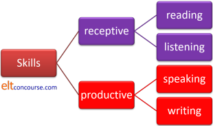
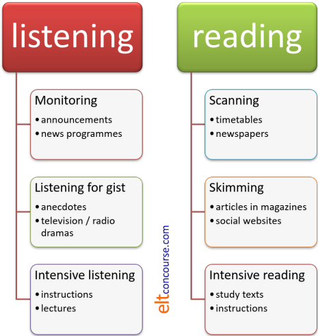

Introduction to skills: initial training sessions
Most participants on an initial training course are slightly surprised that teaching a language is not just about systems and grammar so this set of ideas and worksheets focuses on introducing people to the main ideas that lie behind the teaching of skills.
It is worth saying at the outset that, although the teaching of
skills is enshrined in teacher training syllabuses at all levels,
there are those who would suggest that the deliberate and systematic
teaching of skills is not a good use of classroom time. The
argument, briefly, is that adult learners, and many younger ones,
already know how to read, write, listen and speak and what they need
is to transfer skills they have already mastered to learning and
de-coding a foreign language.
After all, English speakers are not unique in listening for gist,
skim reading, intensive reading, understanding their audience, using
appropriate styles, planning and drafting writing and so on.
Everyone does that, at varying levels of skill, in all languages.
The following is somewhere to start.
Even on short courses, there will have to be some consideration of
the subskills involved in the four main areas. Longer courses may have a
bit more time to devote to the area and there are guides in the
initial plus and in-service sections of the site to help a little. The links come at the end.
 |
The key ideas |
This section does not consider each skill in turn. It is an attempt to survey the general nature of skills and how people may be trained (if trained they need to be) in comprehension and production of texts of any sort.
|
|
The aim of all of this is to give trainees the essential data they need to be able to teach skills effectively (or at least to appreciate what happens when people are asked to access or produce written and spoken texts).
 |
What skills do we use? |
The purpose here is to get participants think a bit about the four main skills and see what their main characteristics are in comparison with each other.
The first task is simple: to identify what skills are being used in a range of situations. In order for people to be able to talk sensibly about the task, it is a good idea to do a short introductory mini-lecture explaining:

Then you can go on to the worksheet.

- Task 1:
This task concerns both productive and receptive skills.
The answers are not as straightforward as one might imagine because part of the purpose of the exercise is to get people to realise that we almost never use skills in isolation.
Here are some ideas: -
- I am explaining something in the newspaper to a friend
Reading, speaking but also listening to my friend's responses to see if she is attending or even interested. - I am writing an email applying for a job
Writing but also re-reading what I have written to check – this is an important text. I may also be making frequent reference to the advertisement for the job. - I am telephoning to arrange an appointment at a hospital
Speaking and listening but it would be odd if writing down times and dates (key data) is not involved. - I am waiting for a train announcement
Listening only but listening for particular information. - Someone is explaining to me how to use a chainsaw safely
I am listening carefully – chainsaws are dangerous – and I may be taking notes (writing) and asking questions (speaking). - I am watching a film on television (with no subtitles)
Listening but with visual clues. I may be talking to someone else about what I'm seeing. - I am buying a packet of biscuits in a small shop
This is a transaction so I am speaking and listening equally carefully. - I am doing this task with a colleague
Reading the task (intensively), speaking and listening and writing the answers. - I am researching skills materials in the teachers’ room
If I am alone, reading (skimming and sometimes reading intensively) but if a colleague is present, I may be speaking and listening, too, as well as reading aloud. - I am trying to understand the
written instructions for a machine
Reading (intensively) and maybe taking a few key notes (writing) or at least highlighting bits of the text.Take advantage if people have selected only one or two skills for each section to explain how complex most of these situations are.
- I am explaining something in the newspaper to a friend
- Task 2:
- This concerns receptive skills and is an attempt to alert
people to how the purpose of a text may influence which
sub-skills we apply to decoding it. Text purposes are
twofold:
The text-producer's purpose
The text accessor's purpose
and those may not coincide.
It really doesn't matter whether people agree or not but the task serves as an introduction to ideas such as:
skimming (9 and 10)
scanning (8 and 10)
reading or listening intensively (3, 6, 7, you hope)
gist listening (4 and 5 but the latter requires more care)
extensive reading (2)
monitor listening (1)
so you will need to be prepared with more examples to explain the concepts.
It is a good time to note that sub-skills are also often combined, for example, scanning may become intensive reading when we find something of interest, casual monitor listening may become intensive listening when the relevance is clear and so on. - Task 3:
- This task is a revision test on receptive skills only so you
need to be sure you have introduced all the terms before it is
tackled.
The answers are obvious.
Receptive skills |
For simplicity's sake, this guide is not separated into sections
concerned with receptive vs. productive skills and sub-skills
vs.
processing procedures. It is also quite unpredictable how your
course will divide up the area so you may wish to introduce
different worksheets at different stages and in a different order.
That's fine and should make little difference.
This part concerns receptive skills only.
Before you start, here's a reminder of some important subskills and text types. There is, as you know, no one-to-one relationship between purposes for reading, text types and subskills so the big picture is somewhat more complex. However, on an initial course, complexity is worth avoiding.

|
Top-down and bottom-up processing |

This worksheet concerns the two main types of processing that we
all, allegedly, use when trying to make sense of what we hear and
read.
The word allegedly is deliberately chosen because there are
those which would claim that these are constructs for which there is
no more than some anecdotal evidence. The truth is likely to
be more complex.
- Task 1
- This is a simple awareness-raising exercise.
The answer, should you need it, involves trying to understand the words that are being said (a bottom-up procedure) and knowing in advance what the topic is so you are listening out for the content from the first word (a top-down procedure). - Task 2
- This concerns knowledge of generic conventions (although the
terminology can be avoided if you like).
We know the answers to the questions because of layout and conventions in the English-speaking world. This is not a universal, of course, and different cultures handle these things differently.
You may like to dwell a little on what exactly it is about the layouts that provides the clues. Here's the right answer:
- The first text is a newspaper
article:
- It has a banner headline to catch the eye
- There is a large graphic to intrigue the reader
- The text is divided into columns
- Paragraphs are short and spread out to make reading easy
- The second text is a technical
article of some kind:
- The title comes in two parts
- The authors' names are at the top
- There is a subtitle which is probably 'Abstract' or 'Summary'
- There's a graphic
- The text is dense and continuous
- The third text is a recipe:
- There's a picture of the finished meal
- There's a list of ingredients
- The procedure is numbered in stages
- Important information
- Text 1: the first paragraph will set the scene: when, where, who? The final paragraph will sum up the situation. Everything in between can be ignored.
- Text 2: the abstract at the beginning will tell you if you need to read it. At the end there will probably be a summary of the main points and that will often include suggestions for further research and work. Detail will be in the text.
- Text 3: the list of ingredients will tell you if you have what's needed. All the text is important because it is a set of instructions.
- The first text is a newspaper
article:
By this time, the meanings of top-down and bottom-up processing should have been made clear. How you define the terms is your problem.
- Task 3
- This is an identification exercise but it is worth noting
now that we do not use the two types of processing separately.
Some of the examples need the use of both types of processing together.
 |
Productive skills |
The first task is to identify the essential differences between
speaking and writing.
Exactly how people choose to phrase things is not important
providing only that they have the essential content right. You
may want to refine things but this is an exercise in understanding,
not terminology.
The second task focuses on what makes the productive skills difficult to master with some suggestions about how to overcome the issues. It's a test more than a teaching procedure so you will need to provide some carefully crafted input before you handle it.
 |
Related areas |
Skills are treated in the in-service and initial-plus guides to the
areas.
There are also guides in the TKT course pages on this site that may
be helpful. Some of the content of the worksheets is taken
from those.
| Related guides | |
| For trainees: | |
| skills | the index to the area in the initial plus section |
| receptive skills | the guide in the TKT course materials |
| productive skills | the guide in the TKT course materials |
| For you (as a reminder of what you need to know) | |
| skills | the index in the in-service section |
| a-z index | where you can find guides to or containing specific concepts and terms |